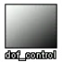
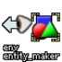
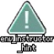
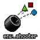

本章主要讲述求生之路2的全部实体及其简要信息。本列表将帮助你了解各个实体的主要功能，主要包括实体的简要功能描述。关于每个实体的详细信息，请到Valve Developer Community查阅。
此列表摘抄了来自Valve Developer Community的实体页面信息和由冬瓜和群友们编写的实体列表。
10.1 base.fgd#
此处大部分实体都可以使用。但部分实体可能因为求生之路引擎分支的原因而无法使用或被阉割。部分无法在求生之路使用的实体已在此列表中删除。最后更新时间：2024年3月2日。
| 编号 | 名称 | 图标a | 描述 | 备注 |
|---|---|---|---|---|
| ambient_generic | 通用的环境音效。用该实体播放并控制一个声音 | 点实体；需要注意的bug见vdc | |
| ambient_music | 用于在音乐层中播放L4D特定的音频，从而覆盖AI Director排队的音乐 | 点实体 | |
| color_correction | 一个控制地图的色彩校正的实体 | 点实体 | |
| color_correction_volume | 区域内控制色彩校正 | 固实体 | |
| env_beam | 创建两个实体（info_target）之间可见的能量束 | 点实体 | |
| env_beverage | 饮料自动售货机，像黑山那样提供罐装饮料，补充血 | 点实体；可能无法使用 | |
| env_blood | 产生鲜血的实体，产生一个动画的血液如走过后留下血脚印或血液喷射在墙上 | 点实体 | |
| env_bubbles | 产生气泡 | 点实体 | |
| env_credits | 一个控制滚动出现制作人员的实体 | 点实体 | |
| env_cubemap | 反射球 | 点实体；内部实体 | |
| env_dof_controller |  | 这是一个作用于所有人的，控制景深设置的实体。 | 点实体 |
| env_dustpuff | 能发出阵阵灰尘的实体，灰尘的大小和透明度不能被调。 | 点实体 | |
| env_effectscript | 允许你通过一个脚本文件来制造特殊视觉效果的实体，只能被引发 | 点实体 | |
| env_embers | 在其体积内产生余烬火性子 | 点实体 | |
| env_entity_igniter | 点火器，使目标实体着火 | 点实体 | |
| env_entity_maker |  | 凭空生成指定的实体模板或模型，配合point_template。就像工厂生产的箱子只要条件允许会被源源不断的生产出来 | 点实体 |
| env_explosion | 产生爆炸的实体 | 点实体 | |
| env_fade | 一个控制屏幕渐变效果的实体 | 点实体 | |
| env_fire | 制造火焰的实体，火焰可蔓延开去，在液体里也可呈现 | 无声无光的火焰；点实体 | |
| env_firesensor | 一个侦测附近热量变化的实体 | 点实体 | |
| 续表 | ||||
| 编号 | 名称 | 图标 | 描述 | 备注 |
| env_firesource | 它提供热量给附近所有的 env_fire 实体 | 点实体 | |
| env_fog_controller | 产生雾气的实体，通过控制雾气的大小来控制可视距离 | 点实体 | |
| env_funnel | 该实体会创造出一大堆发光的点或是其他 spr，慢慢汇聚 | 点实体 | |
| env_hudhint | 该实体是用来控制显示 HUD 的提示。在右下角会出现提示语句 | 点实体 | |
| env_instructor_hint |  | 用于指示/提示玩家做一些事情，例如不要攻击队友！ | 点实体 |
| env_laser | 这个实体自己和另外一实体之间会出现一道光 | 点实体 | |
| env_lightglow | 添加一团光晕效果，如隧道尽头的光晕、灯的光晕等 | 点实体 | |
| env_message | 输出文字信息和声音的实体 | 点实体；过时了 | |
| env_microphone | 作为麦克风的实体，两种模式 扬声器模式和测量模式 | 点实体 | |
| env_particle_performance_monitor | 打开和关闭粒子吞吐量的测量和显示 | 点实体 | |
| env_particlelight | 这个实体是用来照亮 env_smokestack 实体的，为这烟雾 | env_smokestack 实体是吐出一连串的烟；点实体 | |
| env_particlescript | 这个实体会 播放 MDL 的特殊动画，需要被触发。 | 点实体 | |
| env_physexplosion | 它适用于给物理对象施加一个物理力（取决于设置的半径），并取决于大小造成一次轻度到大的爆炸。爆炸不可见，如果你想要爆炸是可见的，请用env_explosion. | 点实体 | |
| env_physimpact | 一个会在其他实体上造成物理效应的实体。 | 点实体 | |
| env_player_surface_trigger | 监控玩家站立的表面的材质，并在它与特定材质之间发生变化时触发输出 | 像 HL2 里踩上沙地引出蚁狮出现，退出沙地就不引发蚁狮出现；点实体 | |
| env_projectedtexture | 投射贴图灯光 | 该实体应用于玩家的手电筒；点实体 | |
| env_rotorshooter | 同env_shooter | 点实体 | |
| env_rotorwash_emitter | 制造旋翼气浪效果。 | 点实体 | |
| env_screeneffect | 一个在玩家屏幕上制造效果的实体。 | 点实体 | |
| env_screenoverlay | 一个可以播放和控制屏幕overlay的实体 | 点实体 | |
| env_shake | 控制玩家屏幕晃动的实体 | 点实体 | |
| env_shooter |  | 这个实体就像它的图标所示，从实体中心喷出 mdl 或 spr（sprite） | 点实体 |
| 续表 | ||||
| 编号 | 名称 | 图标 | 描述 | 备注 |
| env_smokestack | 制造大量烟雾的实体。 | 点实体 | |
| env_smoketrail | 制造出一串烟雾的实体 | 点实体 | |
| env_soundscape | 改变玩家当前背景音效，并定义该音效的发声位置。 | 点实体 | |
| env_soundscape_proxy | 该实体像一个音景一样起作用，但它的所有声音参数从另一音景传出 | 点实体 | |
| env_soundscape_triggerable | 可触发的env_soundscape | 点实体 | |
| env_spark | 产生火花的实体 | 点实体 | |
| env_splash | 创建一个水面飞溅效果（当然不一定非要在水面上产生） | 点实体 | |
| env_sprite | 控制在地图中播放一个效果（sprite）的实体 | 点实体 | |
| env_sprite_oriented | 不随玩家视线转动的spr | 点实体 | |
| env_spritetrail | 在一个实体上制作拖影效果的实体 | 点实体 | |
| env_steam | 制造一个喷射蒸汽或热浪失真的效果 | 点实体 | |
| env_sun | 在天空制造出太阳或月亮的实体 | 点实体 | |
| env_texturetoggle | 一个允许你改变一个固体纹理的实体 | 点实体 | |
| env_tonemap_controller | 一个控制玩家的 HDR 效果（此处指人从暗处到亮处瞳孔来不及收缩视野全亮的效果）的实体。 | 点实体 | |
| env_tonemap_controller_ghost | 同上，但用于处于灵魂状态的特殊感染者玩家。 | 点实体 | |
| env_tonemap_controller_infected | 同上，但用于感染者玩家。 | 点实体 | |
| env_viewpunch | 在玩家的视角造成像挨了一拳的效果。 | 点实体 | |
| env_wind | 制造一个风吹的效果实体 | 点实体 | |
| env_zoom | 一个改变玩家 FOV 的实体 | 点实体 | |
| filter_activator_class | 一个根据激活者的类名称（ClassName）来过滤的过滤器 | 点实体 | |
| filter_activator_context | 它是一个过滤器，通过激活者上的单个上下文进行过滤。 | 点实体 | |
| filter_activator_mass_greater | 过滤特定重量的物体 | 点实体 | |
| filter_activator_model | 按触发者的模型过滤 | 点实体 | |
| filter_activator_name | 一个根据激活者的名称来过滤的过滤器 | 点实体 | |
| filter_damage_type | 用于过滤造成的伤害的过滤器。它只能过滤伤害，而不能过滤造成该伤害的实体 | 点实体 | |
| filter_enemy | 它是一个过滤器，旨在通过一组标准过滤潜在的敌方实体。尽管名称如此，但它的大部分功能与敌人无关，允许它用作任意类型的实体的名称和邻近过滤器。敌意和接近是相对于调用方测量的。 | 点实体 | |
| filter_multi | 一个测试多个过滤器的激活者的过滤器。它允许你建立复杂的过滤系统 | 点实体 | |
| 续表 | ||||
| 编号 | 名称 | 图标 | 描述 | 备注 |
| func_areaportal | 它创建了一个 areaportal，用于管理地图中的可见性。当 Areaportal 打开时，它会停止渲染通过它不可见的对象；当 Areaportal 关闭时，你将看不见里面的对象。实体的固体必须使用tools\toolsareaportal进行纹理处理，才能发挥作用。 | 固实体 | |
| func_areaportalwindow | 同上，但会随着距离而淡出，使你看不见里面的物体 | 固实体 | |
| func_breakable | 它允许你创建一个可以被破坏、打破的固体 | 固实体 | |
| func_breakable_surf | 同上，但它只是由一个面构成的，其他看不到的面使用Nodraw纹理 | 固实体 | |
| func_brush | 它允许你创建一个有多功能的固体（集） | 固实体 | |
| func_button | 它允许你创建一个可以与玩家互动的按钮 | 固实体 | |
| func_clip_vphysics | 它对使用VPhysics的对象有碰撞。使用QPhysics碰撞的物体不受影响 | 固实体 | |
| func_conveyor | 传送带 | 固实体 | |
| func_detail | 它允许你创建一个不会切割visleaf的固体 | 固实体；内部实体 | |
| func_detail_blocker | 它不允许在其体积内放置细节道具。用于阻挡地形之类创建的细节道具（如草）。 | 固实体 | |
| func_door | 它允许你创建一个简单的滑动门 | 固实体 | |
| func_door_rotating | 它允许你创建一个简单的旋转门 | 固实体 | |
| func_dustcloud | 体积内产生层层烟雾 | 固实体 | |
| func_dustmotes | 体积内产生丁达尔烟尘 | 固实体 | |
| func_fish_pool | 带有鱼的水池 | 点实体 | |
| func_guntarget | 沿着path_tracks路径移动的移动目标，可以被射杀 | 固实体 | |
| func_illusionary | 一个没有碰撞的固体 | 固实体 | |
| func_instance | 它允许你「插入」一个vmf（实例预制件） | 点实体 | |
| func_instance_parms | 当放置在实例中时，它处理$parameters与实例中其他实体的属性之间的转换。 | 点实体 | |
| func_ladderendpoint | 指定一个梯子的结束点 | 点实体 | |
| func_lod | 它是一个用固体构建的模型，在指定的距离内淡出。对于创建出于性能原因不需要绘制得很远的世界细节（detail）很有用。 | 固实体 | |
| func_movelinear | 它沿给定距离、给定方向线性移动，类似于func_door。区别在于，它可以沿其运动轴定位在任意地方，在大多数情况下使移动变得简单得多，同时也使用更少的内存。 | 固实体 | |
| func_occluder | 它会隐藏被它挡住的模型，使模型不可见，用于优化。 | 固实体 | |
| 续表 | ||||
| 编号 | 名称 | 图标 | 描述 | 备注 |
| func_orator | 这是一个非常简单的模型实体，具有动画和响应规则。 | 点实体 | |
| func_physbox | 它允许你通过固体创建一个物理对象。 | 固实体 | |
| func_platrot | 可垂直移动和旋转的东西 | 固实体 | |
| func_precipitation | 它会在其体积内制造下雨，雪灰烬或其他粒子效果 | 固实体 | |
| func_precipitation_blocker | 它会阻止在其体积内产生雨雪等类似的粒子效果。 | 固实体 | |
| func_reflective_glass | 镜子 | 固实体 | |
| func_rot_button | 使用时会旋转的按钮 | 固实体 | |
| func_rotating | 它允许你通过固体创建一个旋转对象 | 固实体 | |
| func_smokevolume | 它会在其体积内产生大量烟粒子 | 固实体 | |
| func_tanktrain | 固实体；已弃用 | ||
| func_timescale | 调整服务器和客户端的时间刻度。 | 点实体 | |
| func_trackautochange | 火车转向或升降的转盘 | 固实体 | |
| func_trackchange | 同上 | 固实体 | |
| func_tracktrain | 它会沿着path_track移动 | 固实体 | |
| func_traincontrols | 控制火车 | 固实体；求生中没用 | |
| func_useableladder | 按E键即可攀爬的梯子 | 固实体 | |
| func_viscluster | 它允许您手动告诉 VVIS 其体积内的 visleafs 都可以相互看到，应视为一个。（说白了就是体积内vis算一整块） | 固实体；内部实体 | |
| func_wall | 与func_brush相似。见备注 | 固实体；已弃用 | |
| func_wall_toggle | 与func_brush相似。见备注 | 固实体；已弃用 | |
| func_water_analog | 它是func_movelinear的一个版本，专门用于水固体。在求生之路2中工作不正常。 | 固实体 | |
| game_end | 结束游戏进入下张地图，只结束多人游戏对单人游戏不起作用 | 点实体 | |
| game_gib_manager | 为了真实的表现而控制地图中碎片的数量 | 点实体 | |
| game_player_equip | 给玩家武器的实体 | 点实体 | |
| game_player_team | 一个改变激活者队伍的实体 | 点实体 | |
| game_ragdoll_manager | 为了真实的表现而控制地图中布娃娃数量的实体 | 点实体 | |
| game_score | 一个实体，激活它的玩家的加上/扣除分。 | 点实体 | |
| game_text | 在玩家屏幕上显示文字的实体 | 点实体；求生之路中没用 | |
| game_ui | 重新定义了玩家输入的实体，如：玩家可以在地图里控制汽车像遥控车一样 | 点实体 | |
| game_weapon_manager | 限定游戏中允许的武器类型的实体 | 点实体 | |
| game_zone_player | 统计体积内玩家的数量无论生死 | 固实体 | |
| gibshooter | 看图标也能看出来这是一个喷射带血骷髅和残肢的实体 | 点实体 | |
| 续表 | ||||
| 编号 | 名称 | 图标 | 描述 | 备注 |
| hammer_updateignorelist | 它指定hammer_update_safe_entities控制台命令要忽略的实体。在此处输入要排除在字段列表中的实体的目标名称。其中一些可能存在于地图中。 | 点实体 | |
| info_camera_link | 信息相机连接，通过point_cameras渲染图像投射到某材质上 | 点实体 | |
| info_constraint_anchor | 用来在一个实体上的本地位置添加一个附加约束的实体。 | 点实体 | |
| info_intermission | 一个实体定义了一个中场休息的地方，死亡的玩家将漂浮直到他们重生 | 点实体 | |
| info_ladder_dismount | 它设定了《半衰期2》和《半衰期2：死亡竞赛》中梯子的下马点。 | 点实体 | |
| info_landmark | 换关标记 | 点实体 | |
| info_lighting | 设定prop_static的光照中心 | 点实体；内部实体 | |
| info_mass_center | 一个重设物理道具重心的实体，可以用来做不倒翁 | 点实体 | |
| info_no_dynamic_shadow | 该实体以规定不接受动态阴影的面 | 点实体 | |
| info_null | 为 npc 移动而设置地面上的导航节点 | 点实体 | |
| info_overlay | 允许你贴一个贴图，可以修改它的大小 | 点实体 | |
| info_overlay_transition | 渐变的遮盖如：在水面上叠加波纹效果 | 点实体 | |
| info_particle_system | 粒子系统，可以放置粒子 | 点实体 | |
| info_particle_target | 它是info_particle_system控制点的目标。 | 点实体 | |
| info_player_start | 玩家开始点 | 点实体 | |
| info_projecteddecal | 这个实体把一个印花纹理投射到世界上。 | 点实体 | |
| info_target | 一个什么都不会做的实体。在当作其他实体指向的目标 | 点实体 | |
| info_target_instructor_hint | 一个通用目标，它被复制到客户端到其 HUD 以在屏幕上定位提示。(类似env_instructor_hint+info_target) | 点实体 | |
| info_teleport_destination | 一个自己不会做事的实体，但可以标一个trigger_teleport 实体的传送位置。一个info_target | 点实体 | |
| infodecal | 这个实体把一个印花纹理投射到世界上（或道具上）。使用印花工具放置。 | 点实体 | |
| keyframe_rope | 绳子的中间点 | 点实体 | |
| keyframe_track | 可被path_track替代 | 点实体 | |
| light | 一个360°（全向）的光源 | 点实体 | |
| light_directional | 它是一种没有衰减的平行光，类似于light_environment的直接照明。 | 点实体 | |
| light_dynamic | 它是一种不可见的光源，会随着时间的推移而变化。 | 点实体 | |
| light_environment | 用来设置太阳的颜色环境光颜色和照射角度的实体 | 点实体 | |
| light_spot | 它是一种锥形的不可见光源。 | 点实体 | |
| 续表 | ||||
| 编号 | 名称 | 图标 | 描述 | 备注 |
| logic_active_autosave | 它用于寻找自动保存的机会。 | 点实体 | |
| logic_auto | logic_auto在地图加载后立即触发输出，这与大多数其他实体先等待输入不同。它可以设置为在触发前检查全局状态，这允许您根据先前地图中发生的情况触发事件。 | 点实体 | |
| logic_autosave | 它用于强制自动保存。 | 点实体 | |
| logic_branch | logic_branch测试布尔值，并根据该值是True（1）还是False（0）触发输出。 | 点实体 | |
| logic_branch_listener | 它包含logic_branch实体的列表，并在任意logic_branch的状态更改时触发输出。 | 点实体 | |
| logic_case | 它将输入与最多 16 个配置值进行比较，如果存在匹配项（在 InValue 上），则触发相应的输出，或者触发随机输出（在 PickRandom 上）。将logic_random_outputs用于加权随机输出。 | 点实体 | |
| logic_collision_pair | 可用于启用/禁用两个实体之间的VPhysics碰撞。 | 点实体 | |
| logic_compare | 比较两个值大小并输出 | 点实体 | |
| logic_lineto | 计算并输出从一个实体到另一个实体的向量 | 点实体 | |
| logic_measure_movement | 该实体测量一个实体相对于另一个实体的移动，然后将该移动应用到第三个实体。 | 点实体 | |
| logic_multicompare | 判断输入的一组值是否相等并输出 | 点实体 | |
| logic_navigation | 在其他实体上设置导航属性，可让 NPC 以轻松推动的方式忽略物理道具。 | 点实体 | |
| logic_relay | 逻辑中继器，内部可存储多个输出，可关闭打开 | 点实体 | |
| logic_script | 它是VScripts的容器。 | 点实体 | |
| logic_timer | 以规则或随机的时间间隔输出 | 点实体 | |
| material_modify_control | 通过触发修改材质的着色器等属性 | 点实体 | |
| math_colorblend | 混合带颜色属性的实体的颜色，并控制其他实体的颜色 | 点实体 | |
| math_counter | 数学计数器，可执行四则运算 | 点实体 | |
| math_remap | 重新映射，判断输入的数值是否在其范围并输出新的值 | 点实体 | |
| momentary_rot_button | 旋转阀门按钮 | 固实体 | |
| move_keyframed | 移动关键帧？ | 点实体 | |
| move_rope | 绳子的头 | 点实体 | |
| move_track | 功能更少版path_track | 点实体 | |
| path_track | 路径点 | 点实体 | |
| phys_ballsocket | 焊接二者成一体，二者可不接触 | 点实体 | |
| phys_constraint | 它迫使一个实体保持其相对于另一个实体的位置。这两个物体不需要接触，甚至不需要彼此靠近。 | 点实体 | |
| 续表 | ||||
| 编号 | 名称 | 图标 | 描述 | 备注 |
| phys_constraintsystem | 约束管理器，避免同一组彼此约束引起的「抖动」 | 点实体 | |
| phys_convert | 将任意实体的物理和视觉属性复制到新的物理模拟实体上，成功后原始实体将被删除 | 点实体 | |
| phys_hinge | 铰链，类似马达的转头部分，二者一个是马达一个是扇叶 | 点实体 | |
| phys_keepupright | 让实体面向特定方向 | 点实体 | |
| phys_lengthconstraint | 模拟绳子 | 点实体 | |
| phys_magnet | 磁铁 | 点实体 | |
| phys_motor | 以特定速度旋转它的目标实体 | 点实体 | |
| phys_pulleyconstraint | 一条连接到两个滑轮的虚拟绳索 | 点实体 | |
| phys_ragdollconstraint | 约束两个实体，可以让他们围绕每个轴旋转 | 点实体 | |
| phys_ragdollmagnet | 布娃娃磁铁 | 点实体 | |
| phys_slideconstraint | 沿线段约束实体？ | 点实体 | |
| phys_spring | 弹簧 | 点实体 | |
| phys_thruster | 推进器 | 点实体 | |
| phys_torque | 对实体施加角力？ | 点实体 | |
| physics_cannister | 模拟气罐，如果漏气就飞，被打就炸 | 点实体 | |
| point_anglesensor | 检测某实体是否在一段时间内指向规定方向 | 点实体 | |
| point_angularvelocitysensor | 角速度传感器 | 点实体 | |
| point_bonusmaps_accessor | 解锁奖励地图用的（于求生无用） | 点实体 | |
| point_broadcastclientcommand | 它是一个向每个有效客户端的控制台发出命令的实体，就好像它是由该玩家在本地键入的一样。 | 点实体 | |
| point_clientcommand | 它向客户端控制台发出命令，就好像这些命令是玩家手动键入的一样。客户端命令作为命令输入的参数发送。地图中只需要实体的一个实例。 | 点实体 | |
| point_devshot_camera | 自动在关卡中每个 devshot 相机的位置截取屏幕截图 | 点实体 | |
| point_enable_motion_fixup | 当一个物体启用运动时移动这个禁用移动的物体，将此实体作为道具的父级，当道具启用其运动时，它将立即传送到该实体的原点。 | 点实体 | |
| point_entity_finder | 当给定FindEntity输入时，它会根据给定的条件找到合适的实体，并将结果作为OnFoundEntity输出中的 !caller。 | 点实体 | |
| point_gamestats_counter | 通用的游戏统计计数器 | 点实体 | |
| point_hurt | 对自身周围半径范围内的所有实体造成伤害，可延迟。如果指定了「目标实体」，则只会对该实体造成伤害 | 点实体 | |
| point_message | 点实体；求生不可用 | ||
| point_playermoveconstraint | 将玩家限制在自身周围的半径范围内，当他们越接近半径的边缘时就会减慢他们的速度 | 点实体 | |
| point_posecontroller | 控制模型的姿势参数并循环 | 点实体 | |
| 续表 | ||||
| 编号 | 名称 | 图标 | 描述 | 备注 |
| point_proximity_sensor | 输出自己到目标实体的距离 | 点实体 | |
| point_servercommand | 向服务器控制台发出命令 | 点实体 | |
| point_spotlight | 探照灯的外观 | 点实体 | |
| point_teleport | 将目标实体传送到此实体且角度不变 | 点实体 | |
| point_template | 将一个实体或一组实体转换为可以在任意地方多次实例化的单个模板 | 点实体；包含的实体们的位置不变，使用env_entity_maker生成。注意命名 | |
| point_tesla | 在其起源周围产生闪电弧 | 点实体 | |
| point_velocitysensor | 检测并输出实体的速度 | 点实体 | |
| point_viewcontrol | 控制玩家视角的相机实体。当它处于活动状态时，玩家将看到镜头外。 | 点实体 | |
| postprocess_controller | 该实体控制一系列主要用于《求生之路》系列的电影后期处理效果。其中许多效果是专门设计用来补充《求生之路》的「电影化」艺术方向，例如胶片颗粒或局部对比度。 | ||
| prop_detail | 用于非常高细节的模型 | 点实体 | |
| prop_door_rotating | 一般的旋转门，使用模型 | 点实体 | |
| prop_dynamic | 向世界添加一个可以设置自身动画的模型。 | 点实体 | |
| prop_dynamic_ornament | 将装饰品添加到NPC或武器身上 | 点实体 | |
| prop_dynamic_override | prop_dynamic的变体，允许使用设计用作prop_physics的模型。尽管此实体提供了将物理道具转换为动态道具的自由，但请注意，玩家将依赖道具的行为或多或少与其他地图甚至其他源游戏保持一致。 | 点实体 | |
| prop_physics | 它用于向世界添加刚性的VPhysics模拟模型。 | 点实体 | |
| prop_physics_multiplayer | 它与prop_physics相同，只是它会从碰撞中反弹玩家（如果启用了sv_turbophysics），这有助于避免正常物理对象通常产生的预测误差。 | 点实体 | |
| prop_physics_override | 类似于prop_dynamic_override | 点实体 | |
| prop_ragdoll | 放置布娃娃模型的实体 | 点实体 | |
| prop_static | 它用于廉价地向世界添加模型。它不能移动、播放动画或接受输入，并且在地图编译后不作为实体存在。典型地图中的绝大多数模型都是prop_static。（静态模型） | 点实体 | |
| prop_wall_breakable | 一段墙壁，就像门一样是可破坏的。 | 点实体 | |
| script_intro | script_intro实体是一个仅限单人游戏的实体，在《半条命 2》的介绍序列中广泛使用。 | 点实体 | |
| shadow_control | 顾名思义 | 点实体 | |
| 续表 | ||||
| 编号 | 名称 | 图标 | 描述 | 备注 |
| sky_camera | 标记远景盒中的世界原点。当你的位置相对于地图原点发生变化时，它将相对于sky_camera进行缩放和应用。（相当于你在地图上移动也会在远景盒中进行对应的移动） | 点实体 | |
| sound_mix_layer | 用于将混合层设置为特定值？ | 点实体 | |
| tanktrain_ai | 使关联的func_tanktrain自动沿其路径向最接近目标的节点移动的AI。 | 点实体 | |
| tanktrain_aitarget | 请改用ai_changetarget。一个改变tanktrain_ai实体目标的实体。 | 点实体 | |
| test_traceline | 点实体；调试实体，不应使用 | ||
| trigger_autosave | 自动保存。 | 固实体 | |
| trigger_changelevel | 碰到就转换关卡。 | 固实体；求生之路中请改用info_changelevel | |
| trigger_gravity | 在其体积内更改重力。 | 固实体 | |
| trigger_hurt | 在其体积内造成伤害。 | 固实体 | |
| trigger_impact | 推动体积内的物理对象，还可以输出撞击力。 | 固实体 | |
| trigger_look | 玩家看向这个实体时触发一些输出。 | 固实体 | |
| trigger_multiple | 当其他实体触碰这个实体时会触发一些输出。可多次被触碰。 | 固实体 | |
| trigger_once | 当其他实体碰到它时，它会立即触发输出并把自己从地图中删除。（即trigger_multiple的一次性版本） | 固实体 | |
| trigger_playermovement | 在其体积内让玩家自动蹲伏或者禁止跳跃。 | 固实体 | |
| trigger_proximity | 它的主要用途是检测与可以旋转的动态实体的接近度。 | 固实体 | |
| trigger_push | 在其体积内按照一定方向推动其他实体。 | 固实体 | |
| trigger_remove | 在其体积内移除其他实体。 | 固实体 | |
| trigger_serverragdoll | 在其体积内强制其中的任意NPC创建服务器端布娃娃而不是客户端布娃娃。 | 固实体 | |
| trigger_soundscape | 一碰就触发env_soundscape_triggerable | 固实体 | |
| trigger_teleport | 传送人或物，配合info_teleport_destination或info_target | 固实体 | |
| trigger_tonemap | 更改触碰区域的玩家们的触发tonemap 控制器 | 固实体 | |
| trigger_transition | 体积内的实体都将转到下一张地图。玩家也必须在固体体积内 | 固实体 | |
| trigger_wind | 以推动接触其体积的物理对象，模拟风 | 固实体 | |
| vgui_screen | 地图内的显示器的VGUI屏幕 | 点实体 | |
| vgui_slideshow_display | VGUI屏幕，以幻灯片形式显示图像 | 点实体 | |
| water_lod_control | 它控制水的细节程度。 | 点实体 | |
| 续表 | ||||
| 编号 | 名称 | 图标 | 描述 | 备注 |
| worldspawn | 这个实体代表世界。固体、静态模型、地图名称、天空盒等都是这个实体的一部分，即它存储地图的非交互部分的内容及一些全局配置选项的实体。来自环境的伤害通常是由本实体造成的。例如，如果你摔死，则伤害者就是本实体（World）。警告：严禁创建这个实体的副本！一个地图中只能有一个worldspawn实体。该实体应该由Hammer自动生成。 | 点实体 | |
10.2 left4dead2.fgd#
求生之路引擎分支中引入的实体。部分实体在求生之路引擎分支后的其他起源引擎分支仍然可用；有些是求生之路特有的。最后更新时间：2022年12月12日。
| 编号 | 名称 | 描述 | 备注 |
|---|---|---|---|
| beam_spotlight | 当玩家朝侧面看时会绘制光束，而面对玩家时会画光晕。无论聚光灯的末端在哪里，它都将创建动态光源。除了其旋转能力之外，该实体在功能上与point_spotlight相同 | 点实体 |
| commentary_dummy | 开发者评论模式中用于向玩家展示模型，例如幸存者模型。 | 点实体 |
| commentary_zombie_spawner | 解说模式下特定类型僵尸的手动生成点。 | 点实体 |
| env_airstrike_indoors | 模拟了室内的空中打击效果（摇摇欲坠的天花板）。 | 点实体 |
| env_airstrike_outdoors | 模拟了户外（爆炸的屋顶，地面）的空袭效果。 | 点实体 |
| env_detail_controller | 设置地图中所有prop_detail的淡入距离 | 点实体 |
| env_outtro_stats | 战役结束时输出统计信息 | 点实体 |
| env_physics_blocker | 阻止玩家和物理对象 | 点实体 |
| env_player_blocker | 阻挡玩家和僵尸特感 | 点实体 |
| env_rock_launcher | 生成并发射Tank生成的岩石 | 点实体 |
| env_weaponfire | 模仿枪支的武器射击效果 | 点实体；不穿透多个丧尸 |
| filter_activator_infected_class | 用于过滤特感的触发。 | 点实体 |
| filter_activator_team | 该过滤器检查触发者的阵营 | 点实体 |
| filter_health | 过滤生命值和肾上腺素 | 点实体 |
| filter_melee_damage | 近战伤害过滤 | 点实体 |
| fog_volume | 控制雾和其体积内的后期、颜色校正效果 | 点实体 |
| func_block_charge | 阻挡charger的冲锋 | 点实体 |
| (func_buildable_button) | 固实体的按钮，旨在与VScripts交互而不是与实体逻辑交互。 | 点实体 |
| func_button_timed | 按E带进度条的按钮 | 点实体 |
| func_elevator | 垂直移动的电梯 | 点实体 |
| func_extinguisher | 区域内消灭麻辣烫，煤气罐的火焰 | 点实体 |
| func_ladder | 梯子 | 点实体 |
| func_nav_attribute_region | 设置nav的一些属性 | 点实体 |
| func_nav_avoidance_obstacle | 告诉机器人范围内无法通行 | 点实体 |
| func_nav_blocker | 区域内限制 NPC/机器人越过它 | 点实体 |
| func_nav_connection_blocker | 防止通过其体积建立nav（在创建时）连接 | 点实体 |
| func_playerghostinfected_clip | 对抗模式特感玩家重生前幽灵状态空气墙 | 点实体 |
| func_playerinfected_clip | 特感玩家空气墙 | 点实体 |
| func_ragdoll_fader | 淡出所碰到它的布娃娃 | 点实体 |
| game_scavenge_progress_display | 显示清道夫灌油数量 | 点实体 |
| generic_actor | NPC | 点实体 |
| (info_ambient_mob) | 一般的环境尸潮 开始/结束 | 点实体；已过时 |
| 续表 | |||
| 编号 | 名称 | 描述 | 备注 |
| info_ambient_mob_end | 此实体设置边界框的起点，如果玩家在整个关卡中一段时间 没有前进，则应通过导演的命令生成生物。它不能直接操作，只有在此边界框附近的整个区域都被清除感染后才能工作 | 点实体 |
| info_ambient_mob_start | 同上 | 点实体 |
| info_changelevel | 换关 | 点实体 |
| info_director | 导演 | 点实体 |
| info_elevator_floor | 标志着电梯的楼层 | 点实体 |
| info_game_event_proxy | 显示提示的实体 | 点实体 |
| info_gamemode | 根据当前游戏模式触发输出 | 点实体 |
| info_goal_infected_chase | 吸引僵尸，效果和土制炸弹一样 | 点实体 |
| info_l4d1_survivor_spawn | 生成一代生还者npc | 点实体；站在原地辅助打，路易斯可以用机枪 |
| info_map_parameters | 定义了武器和物品的密度 | 点实体；调整地图补给的多少 |
| info_map_parameters_versus | 定义了对抗模式下武器和物品的密度 | 点实体 |
| info_remarkable | 看到此物的玩家说特定台词 | 点实体 |
| info_survivor_position | 幸存者位置 | 点实体 |
| info_survivor_rescue | 幸存者救援点 | 点实体 |
| info_zombie_border | 僵尸生成的边界 | 点实体 |
| info_zombie_spawn | 用于手动生成僵尸 | 点实体 |
| logic_choreographed_scene | npc对话用 | 点实体 |
| logic_director_query | 输出AI导演的「愤怒」值 | 点实体 |
| logic_game_event | 触发游戏事件 | 点实体 |
| logic_scene_list_manager | 管理logic_choreographed_scene实体列表 | 点实体 |
| logic_versus_random | 对抗模式随机密度什么的 | 点实体 |
| player_weaponstrip | 剥夺玩家的武器 | 点实体 |
| point_boardcastclientcommand | 向每个有效客户端的控制台发出命令的实体，就像该玩家在本地键入命令一样。这在 L4D2 战役《暴风骤雨》中使用，以在暴雨的严重部分改变客户端雾。 | 点实体 |
| point_deathfall_camera | 玩家看他们死亡的实体 | 点实体 |
| point_nav_attribute_region | func_nav_attribute_region的点实体版本，和nav相关 | 点实体 |
| point_prop_use_target | 灌油和可乐的目标受体 | 点实体 |
| point_script_use_target | 按E带进度条调用脚本。可做到进度条松手暂停，和更高级的脚本功能 | 点实体 |
| point_viewcontrol_multiplayer | 控制所有玩家视角的摄像机 | 点实体 |
| point_viewcontrol_survivor | 第三人称过渡第一人称摄像机 | 点实体 |
| prop_car_alarm | 让prop_physics像车警报一样 | 点实体 |
| prop_car_glass | 让prop_dynamic像车警报一样 | 点实体 |
| prop_door_rotating_checkpoint | 检查点安全门 | 点实体 |
| prop_fuel_barrel | 射击后分几个阶段爆炸可每阶段不同碎片 | 点实体 |
| prop_health_cabinet | 导演决定的装有医疗包或者止痛药的柜子。放在标有CHECKPOINT或FINALE的导航网格上将生成医疗包 | 点实体 |
| prop_minigun | 大机枪。通过prop_mounted_machine_gun放置 | 点实体 |
| prop_minigun_l4d1 | 加特林大机枪 | 点实体 |
| 续表 | |||
| 编号 | 名称 | 描述 | 备注 |
| prop_mounted_machine_gun | 大机枪 | 点实体 |
| scripted_item_drop | 可被触摸和拾取的prop_physics_override道具。不与玩家碰撞，且具有用于触摸和拾取的输出，对于简单的收藏品非常有用 | 点实体 |
| trigger_active_weapon_detect | 检测武器在此区域后输出内容 | 固实体 |
| trigger_auto_crouch | 自动蹲下 | 固实体 |
| trigger_escape | 检测体积内是否有逃脱的幸存者后输出内容 | 固实体 |
| trigger_finale | 救援实体 | 点实体 |
| trigger_hurt_ghost | 伤害对抗时特感重生鬼魂 | 固实体 |
| trigger_standoff | 结局撤退时候触发相关??? | 点实体；过时的 |
| trigger_upgrade_laser_sight | 在其有效影响区域内给枪加激光 | 固实体 |
| upgrade_spawn | 武器升级包生成点 | 点实体 |
| weapon_adrenaline_spawn | 肾上腺素生成点 | 点实体 |
| weapon_ammo_spawn | 弹药补充点生成点 | 点实体 |
| weapon_autoshotgun_spawn | 战术霰弹枪（一代连喷）生成点 | 点实体 |
| weapon_chainsaw_spawn | 电锯生成点 | 点实体 |
| weapon_defibrillator_spawn | 电击器生成点 | 点实体 |
| weapon_first_aid_kit_spawn | 急救包生成点 | 点实体 |
| weapon_gascan_spawn | 油桶生成点 | 点实体 |
| weapon_grenade_launcher_spawn | 榴弹生成点 | 点实体 |
| weapon_hunting_rifle_spawn | 猎枪（连发鸟狙）生成点 | 点实体 |
| weapon_item_spawn | 任意可用物品的生成点，武器升级除外 | 点实体 |
| weapon_melee_spawn | 任意近战武器的生成点 | 点实体 |
| weapon_molotov_spawn | 燃烧瓶（麻辣烫）的生成点 | 点实体 |
| weapon_pain_pills_spawn | 止痛药的生成点 | 点实体 |
| weapon_pipe_bomb_spawn | 土制炸药的生成点 | 点实体 |
| weapon_pistol_magnum_spawn | 马格南手枪的生成点 | 点实体 |
| weapon_pistol_spawn | 手枪的生成点 | 点实体 |
| weapon_pumpshotgun_spawn | 泵动式霰弹枪（木喷）生成点 | 点实体 |
| weapon_rifle_ak47_spawn | AK-47突击步枪生成点 | 点实体 |
| weapon_rifle_desert_spawn | 战斗步枪（三连发步枪）生成点 | 点实体 |
| weapon_rifle_m60_spawn | m60机枪生成点 | 点实体 |
| weapon_rifle_sg552_spawn | SG552突击步枪生成点 | 点实体 |
| weapon_rifle_spawn | M-16突击步枪生成点 | 点实体 |
| weapon_scavenge_item_spawn | 清道夫游戏模式油罐生成点 | 点实体 |
| weapon_shotgun_chrome_spawn | 铬管霰弹枪（铁喷）生成点 | 点实体 |
| weapon_shotgun_spas_spawn | 战斗霰弹枪（二代连喷）生成点 | 点实体 |
| weapon_smg_mp5_spawn | MP5冲锋枪生成点 | 点实体 |
| weapon_smg_silenced_spawn | 消音冲锋枪生成点 | 点实体 |
| weapon_smg_spawn | 冲锋枪生成点 | 点实体 |
| weapon_sniper_awp_spawn | AWP生成点 | 点实体 |
| weapon_sniper_military_spawn | 狙击步枪生成点 | 点实体 |
| weapon_sniper_scout_spawn | Scout生成点 | 点实体 |
| weapon_spawn | 所有武器类型生成点 | 点实体 |
| weapon_upgradepack_explosive_spawn | 高爆弹药包生成点 | 点实体 |
| weapon_upgradepack_incendiary_spawn | 燃烧弹药包生成点 | 点实体 |
| weapon_vomitjar_spawn | 胆汁生成点 | 点实体 |
10.3 FGD外的实体#
这些实体可能出于某些原因而没有写进fgd文件中。有些实体不能手动放置，否则可能会导致游戏崩溃。没有写进fgd的实体通常你是无法放置的，除非你将其写入fgd中。不建议你在地图中手动放置这些fgd之外的实体。最后更新时间：2022年12月12日。
| 编号 | 名称 | 描述 | 备注 |
|---|---|---|---|
| _firesmoke | 由env_fire实体调用：火的粒子集合。 | 点实体 |
| _plasma | 由env_fire使用 | 点实体；已弃用 |
| ability_charge | 资料暂缺（可能是Charger的冲锋技能） | 点实体 |
| ability_leap | 资料暂缺（可能是Hunter的飞扑技能） | 点实体 |
| ability_lunge | 资料暂缺（可能是Jockey的技能） | 点实体 |
| ability_selfdestruct | 资料暂缺（可能是Witch的技能） | 点实体 |
| ability_spit | 资料暂缺（可能是Spitter的酸液） | 点实体 |
| ability_throw | 资料暂缺（可能是Tank的投石技能） | 点实体 |
| ability_tongue | Smoker的舌头 | 点实体 |
| ability_vomit | 资料暂缺（可能是Boomer的胆汁） | 点实体 |
| ai_changehintgroup | 它会更改或将特定的Hint组添加到 NPC 或Hint节点。 | 点实体 |
| ai_changetarget | 它的主要用途是更改 NPC 的目标键值，但如果适用，它可以更改任意实体的目标。此任务也可以使用 AddOutput 完成。 | 点实体 |
| ai_sound | 这个实体发出抽象的声音或气味，NPC可以感觉到，但玩家不能感觉到。这可以用来引起附近NPC的反应。一个名为 soundent 的实体似乎有助于在游戏运行时管理 AI 声音。 | 点实体 |
| beam | 一个基础实体，用于其他实体特效的制作 | 点实体 |
| boomer | 顾名思义 | 点实体 |
| charger | 顾名思义 | 点实体 |
| client_path | 资料暂缺 | 点实体 |
| commentary_auto | 此实体类似于 logic_auto 在加载地图时触发输出，在加载开发人员评论系统时触发输出的角色。它仅在注释文件中使用时才起作用，但它似乎不能直接在注释编辑器中使用，并且在任意 FGD 中都不可用。 | 点实体 |
| cs_gamerules | 资料暂缺 | 点实体 |
| cs_ragdoll | 资料暂缺 | 点实体 |
| cs_team_manager | 团队管理器 | 点实体 |
| cycler_flex | 每打一下就播放一个动画 | 点实体；HL2遗留 |
| entity_blocker | 资料暂缺 | 点实体 |
| entityflame | 同env_entity_igniter | 点实体 |
| env_debughistory | 它是用于调试的实体。在大多数游戏中，它被禁用功能并在生成时被删除。 | 点实体 |
| env_dusttrail | 它会产生尘埃云，但缺乏启用或禁用的能力。env_dustpuff是一个不错的选择。要使这成为真正的尘埃痕迹，它必须有一个Parent。 | 点实体 |
| env_entity_dissolver | 它可以在几个内置效果后从地图中删除点实体（通常是道具）（此实体不适用于固体实体）。 | 点实体 |
| 续表 | |||
| 编号 | 名称 | 描述 | 备注 |
| env_fire_trail | 在被摧毁的npc_helicopter上产生的火迹 | 点实体 |
| env_global | 全局状态实体 | 点实体 |
| env_glow | 同env_sprite | 点实体 |
| env_gunfire | 它产生一种可以动态控制和指向目标的枪击效果，给人一种在没有使用实际武器实体的情况下武器射击的错觉。这只是一种视觉/声音效果。不会造成任意伤害。 | 点实体 |
| env_movieexplosion | 创建带有粒子纹理的橙色粒子particles/particle_sphere爆炸 | 点实体 |
| env_muzzleflash | 这是一个实体，在开火时产生火焰离开枪管的效果。在制作自己的定制炮塔或武器以添加逼真的火焰效果时，此实体很有用。与env_gunfire不同，这不会产生任意子弹效果或声音。 | 点实体 |
| env_particle_trail | 资料暂缺 | 点实体 |
| env_particlefire | 资料暂缺 | 点实体 |
| env_particlesmokegrenade | 资料暂缺 | 点实体 |
| env_physwire | 据推测，它是使用phys_ball套接字的keyframe_ropes的钟摆。目前不起作用，因为它的几乎所有代码都被注释掉了。 | 点实体；已弃用。 |
| env_quadraticbeam | 资料暂缺 | 点实体 |
| env_ragdoll_boogie | 资料暂缺 | 点实体 |
| env_rockettrail | rpg导弹（rpg_missilea）燃烧的痕迹。 | 点实体 |
| env_screenoverlay | 可以显示和控制在屏幕上的覆盖贴图，用来显示在玩家屏幕上。适合制造醉酒效果以及传送残影或者提示。 | 点实体 |
| env_sporeexplosion | 这是一种纯粹的化妆品的有害孢子效应。如果需要蚂蚁会做出反应的东西，请参阅npc_grenade_bugbbait或ai_sound。 | 点实体；HL2遗留 |
| env_sporetrail | 资料暂缺 | 点实体 |
| env_steamjet | 同env_steam。 | 点实体 |
| env_tilt | 它本应倾斜玩家的屏幕，但从未完全实现，在任意游戏中都无法正常工作。 | 点实体；已弃用。 |
| env_tracer | 在自身和目标之间以指定的延迟发射薄示踪剂的实体。 | 点实体；无效果 |
| escape_route | 资料暂缺 | 点实体 |
| event_queue_saveload_proxy | 资料暂缺 | 点实体 |
| filter_base | 这个实体类定义了所有过滤器类型共享的通用功能。从技术上讲，这个实体本身无法过滤任意内容。每个实体都被接受（或被拒绝，如果设置了Negated）。 | 点实体 |
| finale_trigger | 资料暂缺 | 点实体 |
| fire_cracker_blast | 资料暂缺 | 点实体 |
| fish | 由func_fish_pool创建的鱼。 警告：在移除func_fish_pool实体之前先移除fish实体会导致游戏崩溃。 | 点实体 |
| 续表 | |||
| 编号 | 名称 | 描述 | 备注 |
| func_physbox_multiplayer | 和prop_physics_multiplayer差不多。 它与func_physbox相同，只是默认情况下对玩家来说不是Solid，并且运行时碰撞使用了一种更具弹性的方法，避免了普通物理对象得到的预测误差。 | 固实体 |
| func_plat | 功能类似于func_platrot。在多人游戏中，玩家在骑行时会出现抽搐。 | 固实体 |
| func_proprrespawnzone | 处理客户端物理道具的重新部署和分发的区域。用于军团要塞2。现无效果。 | 固实体；已弃用。 |
| func_pushable | 固实体 | |
| func_simpleladder | 固实体 | |
| func_train | 固实体 | |
| func_vehicleclip | 固实体 | |
| func_water | 固实体 | |
| func_weight_button | 固实体 | |
| funCBaseFlex | 点实体 | |
| gib | 点实体 | |
| grenade | 点实体 | |
| grenade_launcher_projectile | 点实体 | |
| hammer_updateignorelist | 点实体 | |
| handle_dummy | 点实体 | |
| handle_test | 点实体 | |
| holiday_gift | 点实体 | |
| hunter | 点实体 | |
| infected | 点实体 | |
| inferno | 点实体 | |
| info_infected_zoo_maker | 点实体 | |
| info_infected_zoo_puppet | 点实体 | |
| info_item_position | 点实体 | |
| info_ladder | 点实体 | |
| info_overlay_accessor | 点实体 | |
| info_player_teamspawn | 点实体 | |
| info_player_logo | 点实体 | |
| info_target_instructor_hint | 点实体 | |
| info_vehicle_groundspawn | 点实体 | |
| info_view_parameters | 点实体 | |
| insect_swarm | 点实体 | |
| instanced_scripted_scene | 点实体 | |
| item_sodacan | 点实体 | |
| jockey | 顾名思义 | 点实体 |
| molotov_projectile | 点实体 | |
| multisource | 点实体 | |
| phys_bone_follower | 点实体 | |
| physics_entity_solver | 点实体 | |
| physics_npc_solver | 点实体 | |
| physics_prop | 点实体 | |
| physics_prop_ragdoll | 点实体 | |
| pipe_bomb_projectile | 点实体 | |
| player | 玩家 | 点实体 |
| player_loadsaved | 点实体 | |
| 续表 | |||
| 编号 | 名称 | 描述 | 备注 |
| player_manager | 点实体 | |
| player_pickup | 点实体 | |
| player_speedmod | 点实体 | |
| point_script_template | 点实体 | |
| predicted_viewmodel | 点实体 | |
| prop_physics2 | 点实体 | |
| prop_ragdoll_attached | 点实体 | |
| prop_physics_respawnable | 点实体 | |
| prop_sphere | 点实体 | |
| prop_vehicle | 点实体 | |
| prop_vehicle_driveable | 点实体 | |
| raggib | 点实体 | |
| scene_manager | 点实体 | |
| script_clip_vphysics | 点实体 | |
| script_func_button | 点实体 | |
| script_nav_attribute_region | 点实体 | |
| script_nav_blocker | 点实体 | |
| script_trigger_hurt | 点实体 | |
| script_trigger_multiple | 点实体 | |
| script_trigger_once | 点实体 | |
| script_trigger_push | 点实体 | |
| simple_physics_brush | 点实体 | |
| simple_physics_prop | 点实体 | |
| smoker | 顾名思义 | 点实体 |
| spark_shower | 点实体 | |
| spitter | 顾名思义 | 点实体 |
| spitter_projectile | Spitter的酸液喷射物 | 点实体 |
| spraycan | 点实体 | |
| soundent | 点实体 | |
| survivor_bot | 人机 | 点实体 |
| survivor_death_model | 点实体 | |
| tank | 顾名思义 | 点实体 |
| tank_rock | 顾名思义 | 点实体 |
| target_cdaudio | 点实体 | |
| target_changegravity | 点实体 | |
| te_tester | 点实体 | |
| team_manager | 点实体 | |
| terror_gamerules | 点实体 | |
| terror_player_manager | 点实体 | |
| test_effect | 点实体 | |
| test_proxytoggle | 点实体 | |
| trigger | 点实体 | |
| trigger_brush | 点实体 | |
| trigger_callback | 点实体 | |
| trigger_cdaudio | 点实体 | |
| trigger_togglesave | 点实体 | |
| upgrade_ammo_explosive | 点实体 | |
| upgrade_ammo_incendiary | 点实体 | |
| upgrade_laser_sight | 点实体 | |
| vgui_screen_team | 点实体 | |
| 续表 | |||
| 编号 | 名称 | 描述 | 备注 |
| viewmodel | 点实体 | |
| vomit_particle | 点实体 | |
| vomitjar_projectile | 点实体 | |
| vote_controller | 点实体 | |
| weapon_adrenaline | 武器本体 | 需要通过其生成器生成（weapon_adrenaline_spawn）；点实体 |
| weapon_ammo | 武器本体 | 同上 |
| weapon_autoshotgun | 武器本体 | 同上 |
| weapon_basecsgrenade | 武器本体 | 同上 |
| weapon_boomer_claw | 武器本体 | 同上 |
| weapon_chainsaw | 武器本体 | 同上 |
| weapon_charger_claw | 武器本体 | 同上 |
| weapon_cola_bottles | 武器本体 | 同上 |
| weapon_cs_base | 武器本体 | 同上 |
| weapon_defibrillator | 武器本体 | 同上 |
| weapon_fireworkcrate | 武器本体 | 同上 |
| weapon_first_aid_kit | 武器本体 | 同上 |
| weapon_gascan | 武器本体 | 同上 |
| weapon_gnome | 武器本体 | 同上 |
| weapon_grenade_launcher | 武器本体 | 同上 |
| weapon_hegrenade_spawn | 武器本体 | 同上 |
| weapon_hunter_claw | 武器本体 | 同上 |
| weapon_hunting_rifle | 武器本体 | 同上 |
| weapon_jockey_claw | 武器本体 | 同上 |
| weapon_molotov | 武器本体 | 同上 |
| weapon_oxygentank | 武器本体 | 同上 |
| weapon_pain_pills | 武器本体 | 同上 |
| weapon_pipe_bomb | 武器本体 | 同上 |
| weapon_pistol_magnum | 武器本体 | 同上 |
| weapon_pistol | 武器本体 | 同上 |
| weapon_propanetank | 武器本体 | 同上 |
| weapon_pumpshotgun | 武器本体 | 同上 |
| weapon_rifle_ak47 | 武器本体 | 同上 |
| weapon_rifle_desert | 武器本体 | 同上 |
| weapon_rifle_m60 | 武器本体 | 同上 |
| weapon_rifle_sg552 | 武器本体 | 同上 |
| weapon_rifle | 武器本体 | 同上 |
| weapon_shotgun_chrome | 武器本体 | 同上 |
| weapon_shotgun_spas | 武器本体 | 同上 |
| weapon_smg_mp5 | 武器本体 | 同上 |
| weapon_smg_silenced | 武器本体 | 同上 |
| weapon_smg | 武器本体 | 同上 |
| weapon_smoker_claw | 武器本体 | 同上 |
| weapon_sniper_awp | 武器本体 | 同上 |
| weapon_sniper_military | 武器本体 | 同上 |
| weapon_sniper_scout | 武器本体 | 同上 |
| weapon_spitter_claw | 武器本体 | 同上 |
| weapon_tank_claw | 武器本体 | 同上 |
| 续表 | |||
| 编号 | 名称 | 描述 | 备注 |
| weapon_upgradepack_explosive | 武器本体 | 同上 |
| weapon_upgradepack_incendiary | 武器本体 | 同上 |
| weapon_vomitjar | 武器本体 | 同上 |
| window_pane | 点实体 | |
| witch | 女巫 | 点实体 |
| world_items | 资料暂缺 | 点实体 |